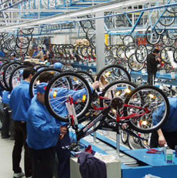
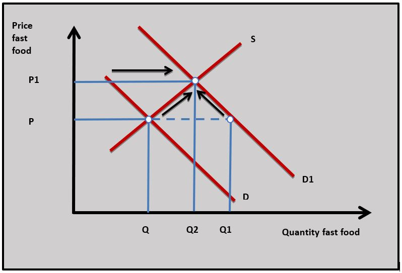
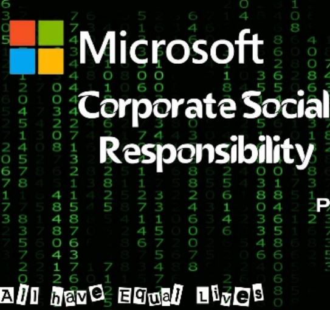
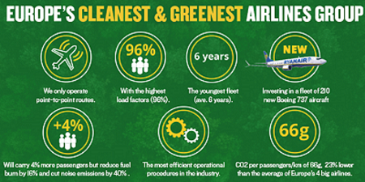
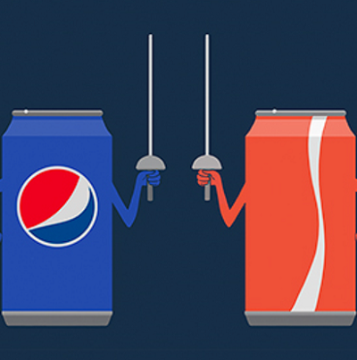
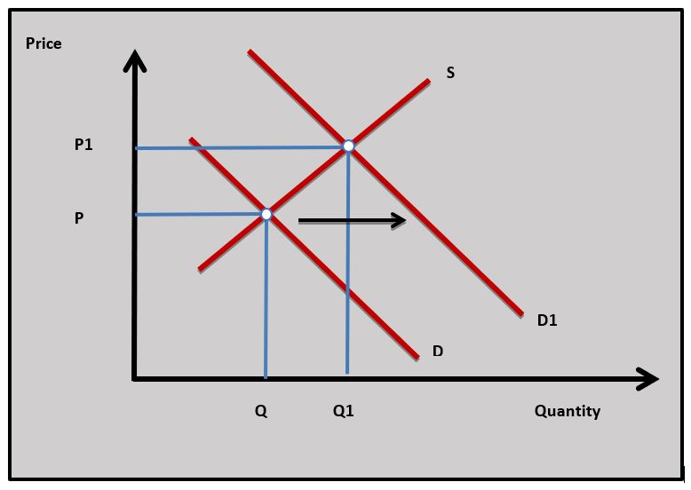

IB Docs (2) Team
IB Docs (2) Team

Unit 2.4(2): Business objectives (HL)
An important influence over the allocation of resources in markets is the supply decisions firms make. Those supply decisions are based on the objectives businesses set when they are producing in different markets. There are a variety of different business objectives firms are influenced by when they are making a supply decision and the importance of these different objectives will vary between producers and markets.
- Profit maximisation
- Corporate social responsibility
- Achieving market share
- Satisficing
- Business growth
Revision material
 The link to the attached pdf is revision material from Unit 2.4(2): Business objectives (HL only). The revision material can be downloaded as a student handout.
The link to the attached pdf is revision material from Unit 2.4(2): Business objectives (HL only). The revision material can be downloaded as a student handout.
Introduction
An important influence over the allocation of resources in markets is the supply decisions firms make. Those supply decisions are based on the objectives businesses set when they are producing in different markets. There are a variety of different business objectives firms are influenced by when they are making a supply decision and the importance of these different objectives will vary between producers and markets.

Profit maximisationProfit maximisation is a central theme of classical economic theory. Classical economists believe that business decision-making is guided primarily by an entrepreneur’s desire to achieve the highest possible profit their firm can make from producing its goods and services. Profit is important to entrepreneurs because it is the reward they earn from the risk of setting up and starting their business. We know that profit maximisation as a business objective is crucial in guiding the allocation of resources in free markets through the incentive function of price.
Profit as an aim influences business decision-making across different markets and between businesses of different sizes. For example, profit will affect producer decision-making from a small firm operating as a sole trader right the way up to a large multinational company that distributes its profit in the form of dividends to its shareholders. For example, a local takeaway restaurant run by family owners might aim to make a profit of $50,000 per year whereas fast-food multinationals like McDonald's might aim for a profit of several billion dollars.
The aim of profit maximisation has important implications for business decision-making. Producers in a market will set price and output that achieves the revenue and costs which give them the highest level of profit. This might mean, for example, a bicycle manufacturer using advertising and promotion to achieve the highest level of demand possible and negotiating the lowest price possible for the raw materials and components it uses in production.
The fast-food giant Mcdonald's reported a profit of US$5.9 billion last year. This is a very successful business in the restaurant market with total revenue of US$21.0 billion. The profit Mcdonald's makes is distributed to its shareholders. Investors buy McDonald’s’ shares because of the dividend they receive, which is the share of the profit they are paid on each share they own. The current Mcdonald's share price is $180 and the dividend a shareholder would expect to earn on the share would be about $4.50 or 2.5%. The higher McDonald’s profit is, the greater the dividend a shareholder receives. The management at McDonald's will, to an extent, make decisions to achieve the highest possible profit because the shareholders want the best possible return from the shares they own.
Questions
a. Explain the role of profit in the allocation of resources in classical economic theory. [4]
Profit guides the allocation of resources according to classical economic theory. If a market such as fast food becomes more profitable resources will be drawn to the market because entrepreneurs can make higher returns from the market and have a greater incentive to set up production.
b. Explain how the signalling and incentive functions of price increase the resources allocated to a market. [10]
Answers might include:

- Definitions of the signalling function of price, incentive function of price, resources and market.
- A diagram to show the resources being allocated to a market through the signalling and incentive functions of price.
- An explanation that as demand rises in a market it creates excess demand at the existing market price. This causes the market price to rise to ration the good. This process is shown in the diagram where the market price for fast food rises from P to P1.
- An explanation that the rising price is a signal to producers and consumers that market conditions are changing.
- An explanation that the rise in price is an incentive for producers to increase quantity supplied to increase profits and for consumers to reduce quantity demanded as utility per unit of money spent falls.
- An explanation that a new equilibrium price is reached at price P1 and output Q2 in the diagram with more resources allocated to the market.
- An example of a market, in this case, is fast food.
Investigation
Look at another firm’s profits, total revenue and share price and make a judgement on how important profit might be to the firm.
Corporate social responsibility aims

Corporate social responsibility (CSR) is a set of business objectives based on environmental, ethical and social factors. Many firms set environmental objectives because they have to follow government regulations. This is particularly the case in industries such as energy and agriculture where production can have a significant impact on the environment. Large numbers of firms also adopt environmental objectives because it is important to their stakeholders such as employees, customers and shareholders. The oil companies Shell and BP have, for example, set the objective of achieving carbon-neutral production by 2050.
Many businesses often target the environment with one eye on sales and profits because having an environmental outlook gives them a positive image in the mind of the consumer. Airlines, for example, have a negative reputation for carbon emissions and might take action to offset carbon emissions and promote their environmental aims as a selling point to consumers.
An ethical objective is where a business makes decisions to achieve positive moral outcomes. Starbucks, for example, buys Fair Trade coffee from suppliers in developing countries where low-income farmers are paid a premium for their output to give them a better quality of life. Some firms have an ethical outlook because of the philanthropic outlook of their owners.
Microsoft owner, Bill Gates, has set up a $50 billion foundation to support healthcare and education in developing countries. In a similar way to environmental objectives, ethical aims often give an organisation a positive image in the mind of the consumer which can help sales and profits.

Ryanair is conscious of the poor environmental reputation flying has as an industry. In response to this, Ryanair operates a scheme called First Climate which is a voluntary carbon offset scheme. The program enables allows Ryanair passengers to donate to offset travel-related emissions when they are booking a Ryanair flight. The money raised is donated to NGOs and environmental organisations. One project is a scheme that offers funding to provide energy-efficient stoves to households in Uganda.Questions
a. Outline an environmental objective Ryanair might aim to achieve. [2]
Ryanair has set a carbon emission target as an environmental objective to try and reduce its CO2 emission and reduce the firm's contribution to global warming. Ryanair has used a carbon offset scheme to try and achieve this aim.
b. Explain two advantages to Ryanair of setting environmental objectives. [4]
- Setting environmental objectives might enhance Ryanair's image in the mind of the consumer and this could increase the demand for its product.
- Environmental objectives might be attractive to potential investors in Ryanair.
- Trying to achieve environmental objectives might attract high-quality employees to Ryanair's business.
*Explanation of any two of the above benefits.
c. Explain two disadvantages to Ryanair of setting environmental objectives. [4]
- Trying to achieve environmental objectives such as investment in new aircraft might increase Ryanair's business costs.
- Some consumers might be suspicious of Ryanair's commitment to environmental objectives and this might negatively affect the reputation of the business.
Investigation
Research into another business that operates an environmental scheme similar to Ryanair's.
Market share
Market share is the percentage of total market revenue an individual firm's revenue accounts for. It is calculated as:
individual firm’s total revenue/market’s total revenue x 100 = individual firm’s market share
If, for example, a firm's total revenue is $25 million and total market revenue is $200 million then the market share would be:
$25m / $200m x 100 = 12.5%

Increasing market share is a useful objective for businesses to judge their relative performance compared to other firms in the same industry. If a business' market share rises then it suggests its performance is better than its competitors. Coca-Cola, for example, might judge its performance based on its market share of 43 per cent of the US soft drinks market as compared to Pepsi's 23 per cent share. Market share is an effective measure of relative performance whatever the market conditions. A business might have falling revenue, but its performance might be good if total market sales are falling in a recession.
Increasing market share can also be useful to a firm looking to achieve greater market influence. A strong market share position might allow a firm to influence the market price, have promotional power over consumers and give it greater bargaining power when dealing with suppliers. The French supermarket retailer Leclerc, for example, has the largest share at 21 per cent, of the supermarket industry in France. This makes its presence very strong in the mind of French consumers and this gives it a strong bargaining position with its suppliers.
In terms of market share, Samsung is a dominant business in the smartphone market. Last year, 25 per cent of all smartphones sold in the world were Samsung phones. Samsung has been among the top 5 smartphone producers in the world since 2009. As other firms such as Nokia have declined Apple and Samsung have become the two dominant businesses in the market. Samsung currently has the largest market share at 25 per cent. This gives the firm huge marketing power in the minds of consumers and buying power in the minds of its suppliers.
 Worksheet questions
Worksheet questions
Questions
a. (i) The value of the US smartphone market is $77 billion and Samsung has a 28% market share. Calculate the value of Samsung's total revenue. [2]
$77B x 0.28 = $21.56B
(ii) The US smartphone market is expected to grow by 3% next year and Samsung's market share is expected to rise to at 30%. Calculate percentage rise in Samsung's total revenue. [4]
1.03 x $77B = $79.31B
0.30 x $79.31B = $23.79B
$23.79B - $21.56B = $2.23B
$2.23B / $21.56B x 100 = 10.34%
b. Explain two benefits to Samsung of an increase in its market share. [4]
- By increasing market share Samsung can achieve greater influence in the Smartphone market which could raise awareness of the firm's brand name in the market and allow it to achieve greater sales.
- A greater market share might make Samsung more attractive to investors who would be looking to fund business.
- By achieving a greater market share Samsung might achieve greater bargaining power with suppliers of components to make its mobile phones.
*Explanation of any two of the above benefits.
Investigation
Look at other markets dominated by a small number of large producers and consider some of the implications of a large market share for those businesses.
Satisficing
Satisficing is where a business sets an aim that is satisfactory rather than optimal. Instead of trying to maximise profits, a firm might set an acceptable profit objective. The firm can then meet the needs of its shareholders as well as its other stakeholders such as its employees and the local community.
The owner of a small business that makes computer games may, for example, aim for a comfortable living for themselves and their small team of game designers ahead of maximising profits. Satisficing might give them time to enjoy a good quality of life, although there will be an opportunity cost in terms of lower profits and wages.
Business Growth
For many firms, the growth of their profit, revenue and market share is a key objective because it represents progress. A business that is reaching more customers, operating in more countries and has a higher asset value is often seen as successful in terms of growth. This is closely linked to profit maximisation but it is not quite the same. A firm, for example, may look to discount its products to achieve sales growth at the expense of short-term profitability.
If you look at the last 15 years there has been no better measure of Meta’s success than user growth. Meta sees this as ‘connecting the world’. Growth has been a key objective for Meta since it was started (as Facebook) by Mark Zuckerberg in 2004. Meta’s growth was ‘kicked on’ when it acquired WhatsApp and Instagram. Currently 2.3 billion log in regularly to Meta which gives it huge economic, social and political influence.
More users mean more profit and advertisers pay to promote products on the internet. Like many technology businesses, it took Meta sometime before it made a profit. It became profitable in 2009 and it reported a profit of $6.09 billion last year.
Question
Using a real-world example, evaluate the view that profit maximisation is the most important aim for a business. [15]
Answers might include:

- Definition of profit maximisation.
- A diagram to show how firms aiming to increase profits could involve decision making that increases the demand for their product such as advertising. *It is also possible to use a theory of the firm diagram from later in the course in Unit 2.11 Market power that shows profit maximisation.
- An explanation of profit maximisation is a business objective that profit is the return the entrepreneur earns for the risk of setting up production and firms can make decisions to increase their profits by increasing the demand for their good or service. This is shown in the diagram where D increases to D1.
- An explanation that firms can try to profit maximise by reducing their costs by, for example, reducing the wages of their labour force.
- Evaluation/synthesis might include discussion of how businesses might move away from profit maximisation to target other objectives such as increasing market share, environmental and ethical aims along with satisficing. The discussion could also include the relative importance of different business objectives in a different market.
- An example of businesses setting different objectives such as Facebook.
Investigation
Find another business in the technology sector and consider how important growth is as an objective.
Which of the following would not be an objective of a profit maximising firm?
Offering workers flexi-time may not have the aim of increasing profits.
Which of the following would not be an example of a firm trying to achieve CSR aims?
Opening a new factory near a wildlife sanctuary is unlikely to meet with an environmental objective.
A supermarket sets an objective of achieving a market share of 28%. If they achieve this target with a sales revenue of
Which of the following best describes a firm setting satisficing as an objective?
5. Which school of economic thought is most likely to assume profit maximisation is the main aim of producers in the market?
Profit maxmisation is a central theme of Classical economic theory.
Which of the following is the most likely to be true if Firm A's market share has increased?
If firms A's sales are increasing at a faster rate than other firms in the market its market share will increase.
 Twitter
Twitter
 Facebook
Facebook
 LinkedIn
LinkedIn